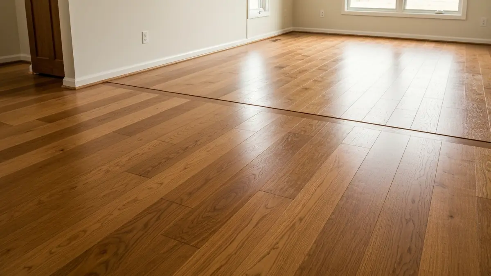

Hardwood Floor Refinishing in Chalco
Hardwood Floor Installation And Refinishing in Chalco
Chalco, an established community nestled just southwest of Omaha, features a distinctive housing stock largely built from the 1970s through the 1990s. Many of these homes boast original hardwood floors that, while beautiful, now exhibit the signs of decades of life – from family foot traffic to Nebraska's challenging climate fluctuations causing expansion and contraction. The unincorporated nature of Chalco often means varied approaches to home maintenance, leading to a significant demand for cost-effective restoration solutions. Residents are increasingly seeking to refresh their homes' character without the expense of full replacement. Elkhorn Hardwood specializes in breathing new life into these aging floors, addressing common issues like scratches, sun fading, and general wear. Our services offer Chalco homeowners a smart investment, revitalizing their living spaces and enhancing property value through expert refinishing and thoughtful installation tailored to their unique needs.

Why Chalco Residents Choose Elkhorn Hardwood
Being truly local to the Omaha/Elkhorn metro means Elkhorn Hardwood understands Chalco's specific nuances. We're not an out-of-town contractor; we regularly service homes along Giles Road, near Chalco Hills Recreation Area, and throughout the community. This proximity allows for quick, responsive service and ensures our team is familiar with the common flooring types, building styles, and even the micro-climates that can impact wood floors in different parts of Chalco. Our reputation for quality and community-focused service has grown among your neighbors.
For Chalco homeowners, our specific advantage lies in our expertise with older, well-loved floors. We excel at assessing floors that have seen years of use, often with deferred maintenance, and recommending the most cost-effective path to restoration. Whether it’s carefully sanding away decades of wear, matching historical stains, or performing targeted repairs, we respect the original character of Chalco homes. Our solutions are designed to enhance your property's value and appeal, delivering results that are both beautiful and durable for the long term.
Our Hardwood Floor Installation And Refinishing Services in Chalco
- Hardwood Floor Refinishing: Many Chalco homes feature solid hardwood floors longing for rejuvenation. We expertly sand away years of wear, scratches, and outdated finishes, breathing new life into your existing floors. This is a cost-effective solution for restoring the beauty and durability of your home’s character.
- Hardwood Floor Installation: For Chalco residents expanding their homes or replacing worn carpets, we provide seamless hardwood floor installation. We help select materials that complement your home's aesthetic, whether matching existing wood types or introducing a fresh, modern look to areas like new additions or remodeled kitchens.
- Hardwood Floor Repair: From pet damage and moisture stains to isolated gouges, older Chalco homes often need targeted repairs. Our skilled technicians carefully mend damaged sections, blending repairs flawlessly with your original flooring, preserving its integrity and saving you the cost of full replacement.
- Dustless Sanding: Understanding the value of a clean home environment, particularly in established neighborhoods, our dustless sanding system minimizes airborne particles. This ensures a healthier atmosphere during refinishing, making the process cleaner and less intrusive for Chalco families and their pets.
Serving Chalco and Surrounding Areas
Chalco is a distinct community situated southwest of Omaha, bordering Sarpy County, offering a blend of established residential areas and convenient access to wider metro amenities. We proudly serve every corner of Chalco, from homes west of Highway 31 (204th Street) and those along Giles Road, to properties near the Chalco Hills Recreation Area. Our service footprint extends throughout the neighborhoods north and south of Q Street, reaching toward Cornhusker Road. Whether you're near Werner Park or closer to the core Chalco Road district, our teams are familiar with your locale and ready to provide expert service directly to your doorstep.
Frequently Asked Questions About Hardwood Floor Installation And Refinishing in Chalco

How much does hardwood floor installation and refinishing cost in Chalco?
Older homes in Chalco often have unique layouts or varied existing floor conditions. Refinishing costs typically range from $3-$5 per square foot, while new installation starts around $8-$15 per square foot, depending on wood type and project complexity. Factors like the extent of repairs needed on aging Chalco floors or specific finish choices will influence the final price.
How long does hardwood floor installation and refinishing take for a typical Chalco home?
For a typical Chalco home, covering 500-1000 square feet of hardwood, refinishing usually takes 3-5 days, including drying and curing time. New installation can vary from 2-7 days depending on the area's size and preparation needed. We work efficiently to minimize disruption for Chalco families in their established homes.
Do you serve all of Chalco?
Yes, Elkhorn Hardwood proudly serves all of Chalco, NE. Whether you reside in the older, core Chalco community near the former post office, in newer developments closer to Highway 31, or in homes bordering the Chalco Hills Recreation Area, our skilled team covers your neighborhood. We ensure comprehensive service across the entire area.
Is it always worth refinishing very old or heavily worn hardwood floors in Chalco?
Absolutely. Many older Chalco homes possess high-quality original hardwood that, despite heavy wear or deferred maintenance, can be beautifully restored. Refinishing is often significantly more cost-effective than replacement and preserves the home's authentic character. We'll assess your floors to determine the best approach, guaranteeing a stunning, durable finish that respects your home's history and offers lasting value.
Ready to schedule your hardwood floor installation and refinishing service in Chalco? Call us today or use the contact form above — we serve Chalco and all surrounding areas of Omaha/Elkhorn, NE. Most Chalco jobs are scheduled within 48-72 hours.